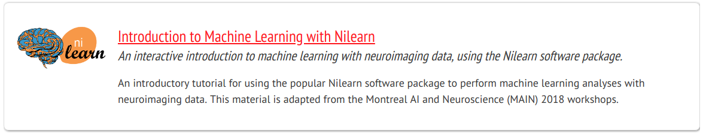
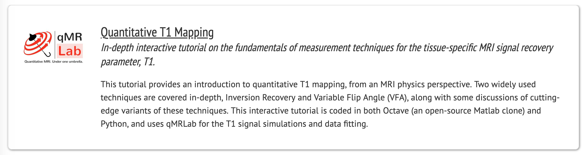
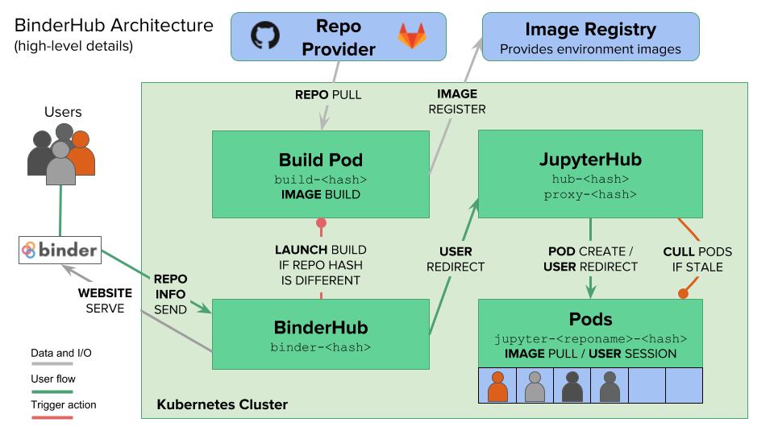

What can you do with neurolibre ?


How are we doing that ?

1. Creation of a submission and peer reviewed system
@pbellec @rstones @glatard @emdupre @ltetrel and many others .. !
2. Boutiques tutorial
@glatard @ltetrel
3. (in progress) Brainiak tutorial
@manojneuro @ltetrel
What's next?
- More automatic submission and peer-reviewed system
- Improve our server ressources (internet speed)
- Partner with Aperture? Other journals?
- Access CONP data directly through NeuroLibre
- Create a private, uncurated cloud for authentificated CONP members